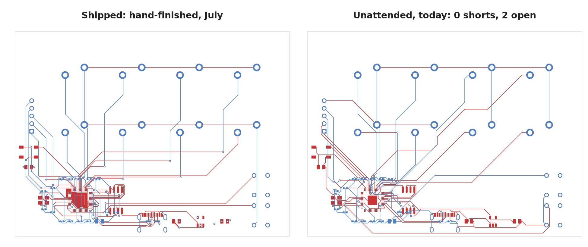
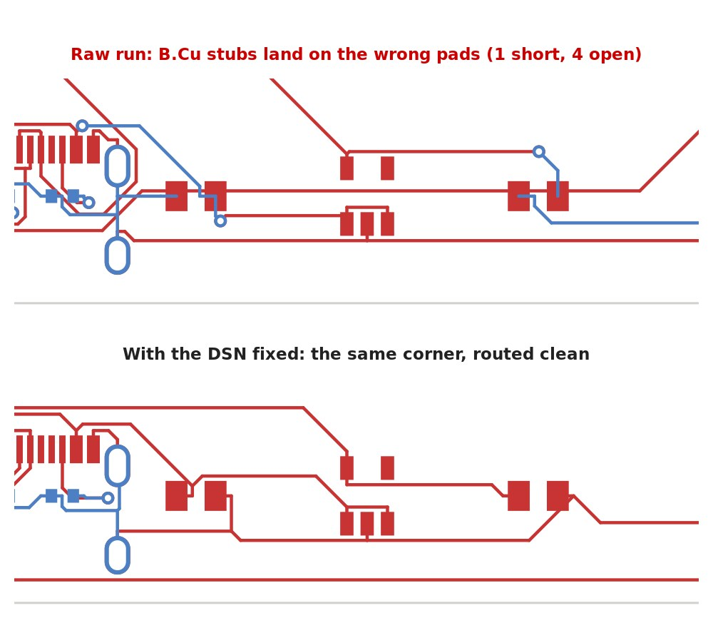

In July we shipped einhander, a one-handed USB-MIDI keypad on a 4-layer RP2040 board, and getting its routing clean took a stack of patch scripts written for that one board. Our PCB pipeline is code first: the circuit is TSX in tscircuit, it is exported to KiCad and to a Specctra DSN file, Freerouting routes the DSN, and the routes are injected back into KiCad and checked. Unattended runs of it on einhander ended with shorts and open nets around the voltage regulator. We had filed that under "the autorouter can't do dense corners" and finished the corner by hand.
Today we ran the whole pipeline again, with nobody touching it, and put the result next to the July board to see how far it had come. It turned out the corner was never the router's fault.

01 / The unattended run, before anything changed
32 seconds, end to end, and the same failure as always. Placement passed its checks, Freerouting finished in about six seconds, and after injection into KiCad the design-rule check found one short (VBUS to RUN) and six unconnected items. They looked like the July failures.
This time, before reaching for a patch, we listed the seven defects. Every one of them was on one of three capacitors: C_IN and C_OUT around the 3.3 V regulator, and C_LED on the far side of the board. All three are 0805 parts on the top side. And each one had the same signature: a track on the bottom layer ending exactly on the other pad of the part, with no via between layers. A dense corner doesn't produce that. It looks like the router believed those parts were somewhere else.
02 / The router was routing a different board
It was. The DSN file describes each footprint once, as an "image", and every part that uses it points at that image. tscircuit's exporter names images by footprint, so all the 0805 capacitors share one. On einhander that image was written from C11, a decoupling capacitor that sits on the bottom of the board. So the shared image describes a bottom-side part: pads on the bottom copper layer and mirrored, pin 1 where pin 2 should be. The three top-side 0805s inherited it.
The KiCad file from the same export gets every part right, so the two files disagreed and nothing complained. Freerouting faithfully routed the board it was given, in which C_IN, C_OUT and C_LED were mirrored bottom-side parts. In the real board those tracks arrive on the wrong layer at the wrong pad.

The fix is a small step before routing, dsn_split_sides.py. It takes every pin in the DSN, works out where it lands on the board, and compares that with where KiCad puts the same pad and on which side. A part that disagrees gets its own image, rebuilt from the KiCad pads. The comparison has to be done in board coordinates: the RP2040 sits rotated by 90 degrees, and the two files store its pad offsets in different frames, so a naive comparison flagged it as wrong when it wasn't. On einhander the step changes exactly the three capacitors and nothing else, and running it twice changes nothing.
03 / Before and after, with nobody touching it
| Shipped, July (hand-finished) | Unattended, before the fix | Unattended, after the fix | |
|---|---|---|---|
| Shorts | 0 | 1 | 0 |
| Unconnected | 0 | 6 | 2 |
| Dangling tracks | 2 | 3 | 0 |
| Board-specific patch scripts | 3 | none | none |
| Track length | 1464 mm | 1461 mm | 1421 mm |
| Vias | 49 | 35 | 32 |
| Ground and 3.3 V on signal layers | 485 mm | 544 mm | 507 mm |
The unattended board uses less copper and fewer vias, and it is not yet better. Look at the key matrix in the first picture: the July board runs each key line in short straight segments, and today's run takes long diagonals across the board. Both are electrically fine; the July one is easier to inspect and to rework.
Two of the three patch scripts in the July board repaired the regulator corner at hard-coded coordinates, deleting and redrawing copper around C_IN and C_OUT. One of them broke the first time a reroute moved a track. A finishing script that needs literal coordinates is a good sign that something upstream is wrong.
04 / Our own check was lying, too
The pipeline's last step printed "RESULT: CLEAN" on a board with two open nets. Our DRC triage script sorts the KiCad report into placement problems, real shorts and cosmetic noise, and decides pass or fail. It counted unconnected items in its summary but left them out of the verdict. A board that isn't connected is not clean, and it now fails. Any older "CLEAN" from this script deserves a second look at the unconnected count.
05 / What's still open
Two nets, and both are Freerouting's. With the capacitors fixed, Freerouting leaves the QSPI clock between the RP2040 and its flash out of its output entirely, with no wire at either pad, while reporting the run complete. It does that on every run. The second, USB D+, stops one pad short of the connector's second D+ contact. We tried three ways to get the router to finish:
- Route only what's left. Feed every finished wire back in as fixed and ask for a second pass. Freerouting 2.2.4 stalls after a pass or two, even with only ten wires fixed.
- A newer Freerouting. Version 2.4.1 produced 1,376 violations on the same file and took 90 seconds per optimizer pass.
- Run it longer. More passes give the same result; the clock net never appears.
So the last two nets are a few minutes of hand-routing in KiCad, or a small finisher that routes only the open nets around existing copper. We would rather build the finisher, because the point of the exercise is a board that comes out clean without us.
06 / What changed since July
The pipeline didn't get smarter. We stopped trusting the story we'd told about it. In July we read the shorts as router weakness and fixed them where they appeared. This time we asked what the seven defects had in common before fixing any of them, and that pointed upstream. The rerun, the diagnosis, both fixes and the measurements above were done by Claude in one session of under an hour, starting from "try this again side by side with the original".
The fix, the stricter check, the finishing scripts from einhander and these notes are now in the pcb-layout skill at punkfab/circuit-skills, including the dead ends above so nobody repeats them. If you route tscircuit exports with Freerouting and have parts of the same footprint on both sides, check them. Have a board whose last ten percent always ends up done by hand? Start a project →